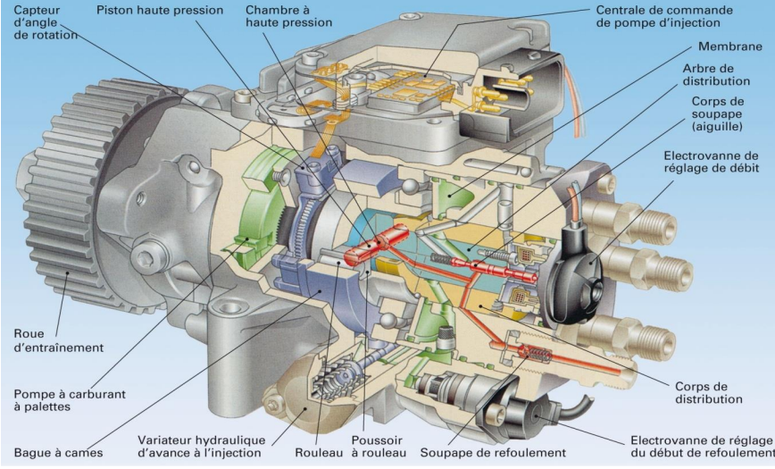
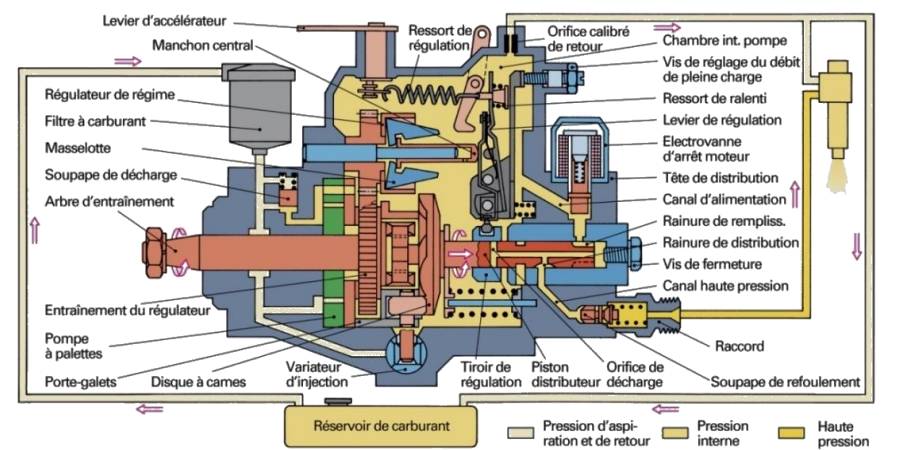

Montages de common rail
Pompes a pistons radiaux : Bosh CP1, CP2
- 2 ou 3 pistons disposes radialement
- Compression alternée via un arbre excentrique.
- pression depuis 1600 - 200bars
- debit eleve | adaptes aux petits et gros moteurs


Pompes a pistons Axiales : Denso HP0, HP3
- 1 ou 2 pistons alignés axialement.
- Entraînés par un plateau incliné (swashplate).
- Pression entre 1800 et 2500bars
- Moins sensibles a l'usure